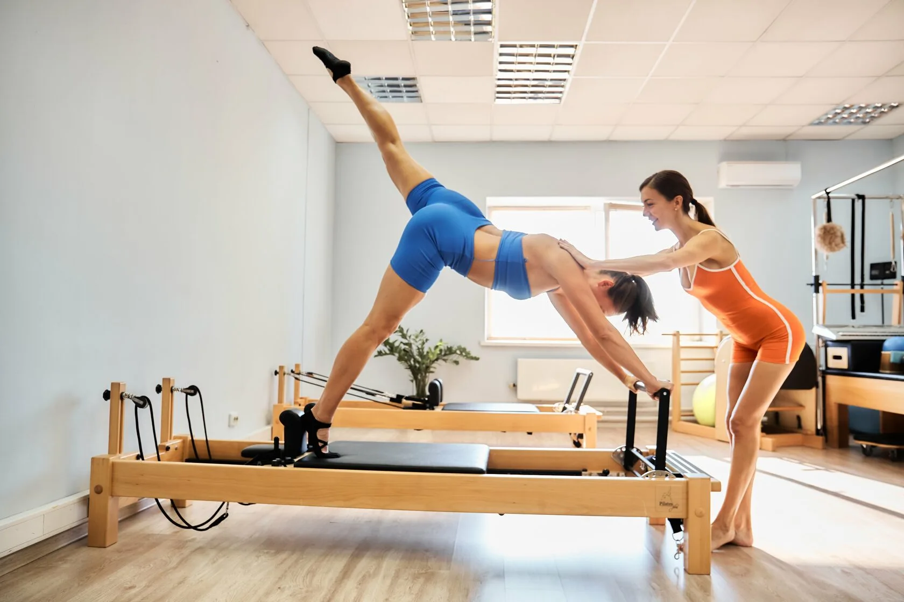
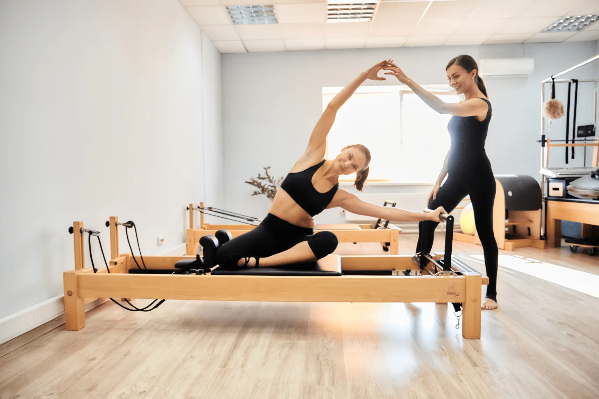
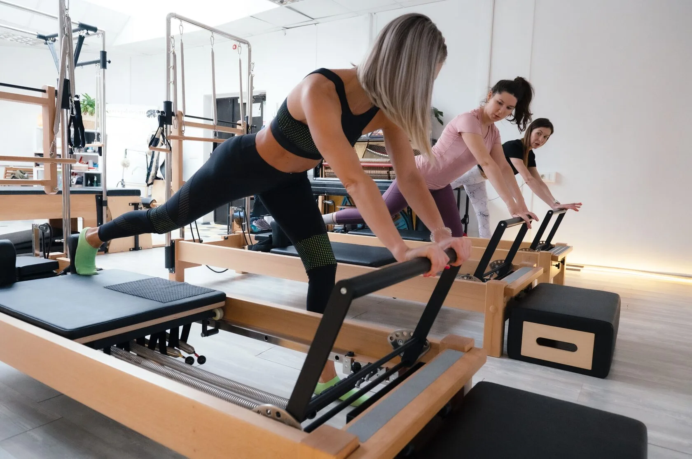
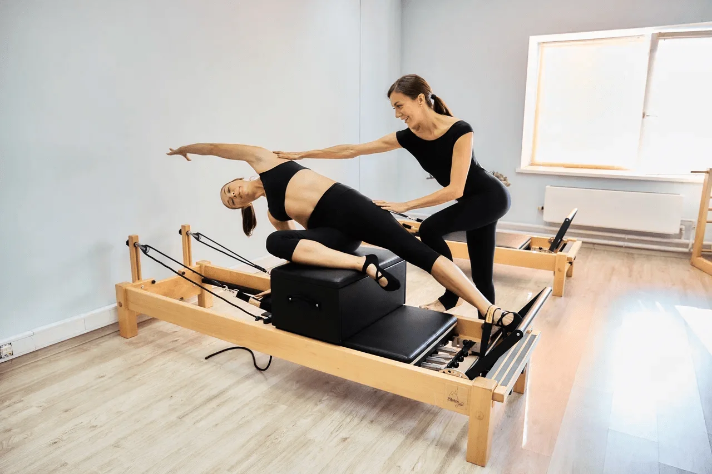

Пилатес на реформерах в Москве — тело, которое вас слушается.
Улучшаем осанку, снимаем боль в спине и шее, возвращаем легкость движения. Мини-группы до 7 человек и персональные тренировки в студии у м. Ботанический сад.
Первое занятие – пробное. Приходите и почувствуйте разницу уже за 60 минут.



Почему реформер
Реформер – это рама со скользящей кареткой и пружинным сопротивлением. Тренажер разгружает позвоночник и суставы, поэтому работает даже при болях в спине и после травм. При этом сопротивление пружин включает те глубокие мышцы, которые не “включаются” ни на коврике, ни в обычном зале. Результат – ощутимый прогресс уже с первого занятия без ощущения «выжатого лимона» после тренировки.

Кому подходит
- Сидячая работа, «замученная» спина и шея
- Восстановление после травм и родов
- Желание укрепить тело без ударных нагрузок
- Стресс и усталость – движение как перезагрузка
Как проходит занятие
Занятие длится 60 минут. Первые 10 – тестирование: вы рассказываете о запросах и самочувствии, тренер оценивает подвижность и уровень подготовки. Дальше – сама тренировка на реформере с аксессуарами: ремни, боксы, фитнес-мячи, кольца. Темп спокойный, каждое движение вы выполняете под контролем тренера. После – легкая, приятная усталость, ощущение подъема и гордости за себя.
- На первой встрече обговариваются ваши запросы и выявляются все противопоказания, если таковые есть.
- Тренировка длится 60 минут, в процессе которой тренер оценивает уровень вашей физической подготовки и состояния тела.
- Тренер последовательно дает вам упражнения на тренажере на разные группы мышц. Все движения предельно простые, с которыми справится каждый.
- Упражнения на классическом тренажёре – реформере выполняются с различными аксессуарами: ремни, планки для ног, плечевые блоки, боксы, а также фитнес-мячи, кольца и многое другое. Тем упражнений размеренный, на низких амплитудах, без спешки и силовых преодолений.
- Тренер демонстрирует каждое упражнение сам и направляет вас, чтобы тренировка приносила результат. В пилатесе важно правильное дыхание и техника исполнения.
- После занятия организм не устает так, как после стандартных тренажеров и аэробики. В теле скапливается приятная легкая усталость, вы чувствуете расслабление и удовлетворение.
«Для наивысших достижений в пределах наших способностей во всех сферах жизни мы должны постоянно прилагать усилия для приобретения сильного, здорового тела и развития нашего сознания до пределов наших возможностей»Джозеф Пилатес
Отзывы
Яндекс КартыОтзывы студии
Отзывы загружаются с Яндекс Карт.
Запишитесь на пробную тренировку – в группе или индивидуально. После занятия вместе с тренером составим ваш персональный план и подберем абонемент.
Личный кабинет
Вход по SMS, покупка и запись будут доступны на подключённом стенде.